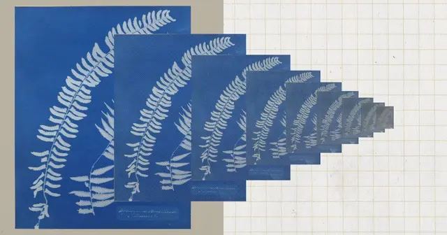

#anthropic
Anthropic、AIモデルの蒸留攻撃を最大99％削減する新防御技術を発表

Anthropicは2026年10月12日、AIモデル「Claude」の能力を不正に複製する「蒸留攻撃」への新たな防御技術を発表しました。初期の観測では、攻撃者が取得できる推論データ量を約90〜99％削減したと報告しています。
記事で取り上げている点
- AIの推論能力を狙う蒸留攻撃とは
- 新たな防御技術の3つの柱
- 1. 推論データの移動制限
- 2. 二段階分類器による攻撃検知
- 3. 大規模な反復攻撃の抑制
- 攻撃データの流出量が最大99％減少
- 開発者とAI業界への影響
- 今後の展望
一次情報（出典） anthropic.com